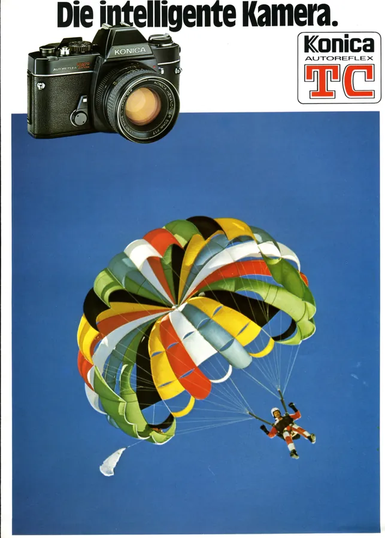
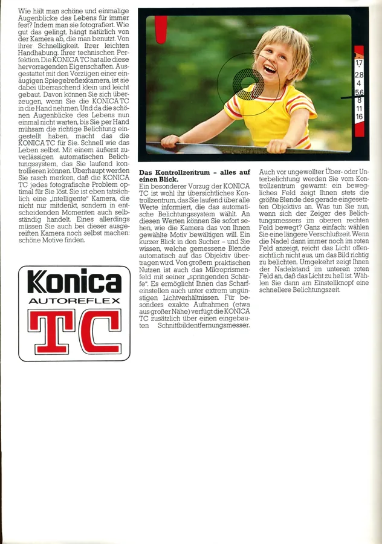
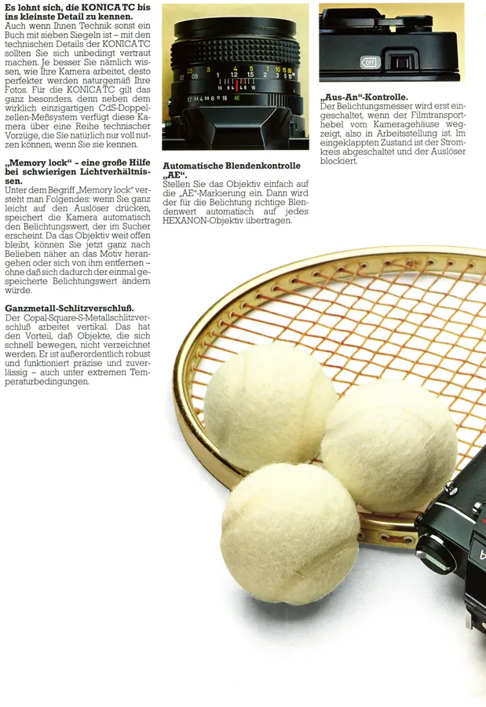
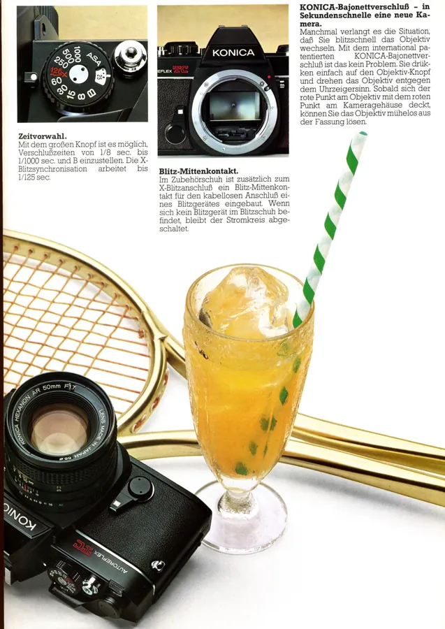
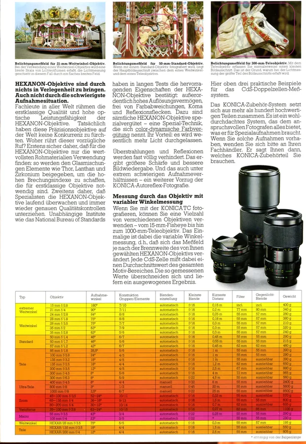
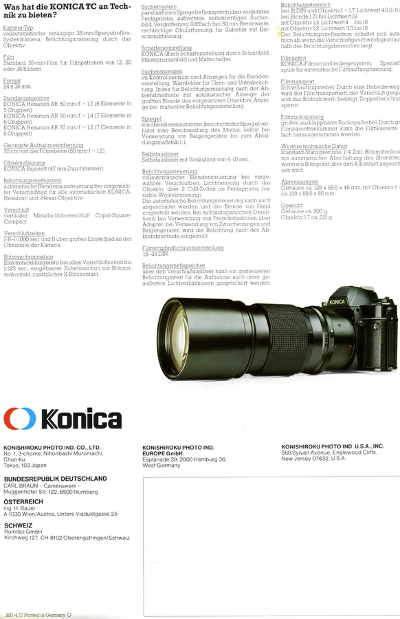

Przejdź do treści
Zenbliski
Menu
Archiwalne
Analogowe
Kolekcja
Akcesoria foto
Materiały reklamowe
Artykuły – blog
Foto ciekawostki
Cyfrowe
Materiały reklamowe
Foldery i prospekty
Konica Autoreflex TC, 1977 r., niemiecki






Poprzednia
Fujica
HD-S,
1980 r., szwedzki
Następna
Konica C35 AF, niemiecki